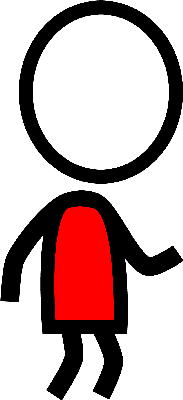
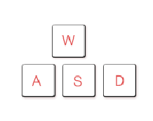
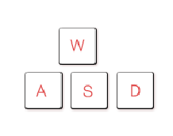

Game


Maze Game
Can you save all 8 of your friends hidden in the labyrinth in less than 2 minutes?
Use w, a, s and d to move. w for up, a for left, s for down and d for right
Time:
120 seconds remain
Score:
0
Can you save all 8 of your friends hidden in the labyrinth in less than 2 minutes?
Use w, a, s and d to move. w for up, a for left, s for down and d for right
120 seconds remain
0
By registering consent for organ and tissue donation, you give hope to the thousands of Ontarians waiting for a transplant. Individuals on the transplant wait list are suffering from organ failure and without the generous gift of life from an organ donor, they will die. Tissue donors can also enhance the lives of recovering burn victims, help restore sight, and allow people to walk again. Transplants not only save lives, they return recipients to productive lives
social media
Tweets by TrilliumGift